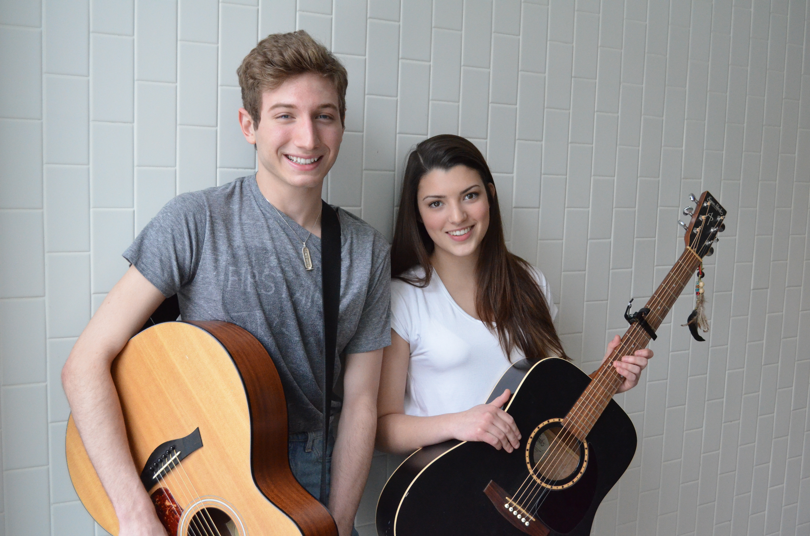
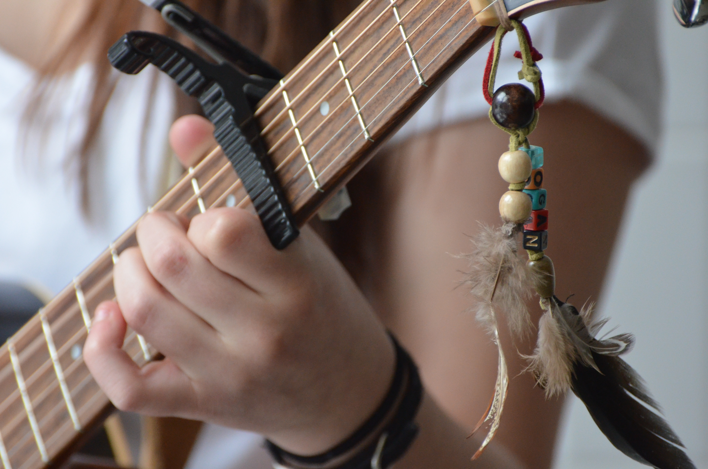
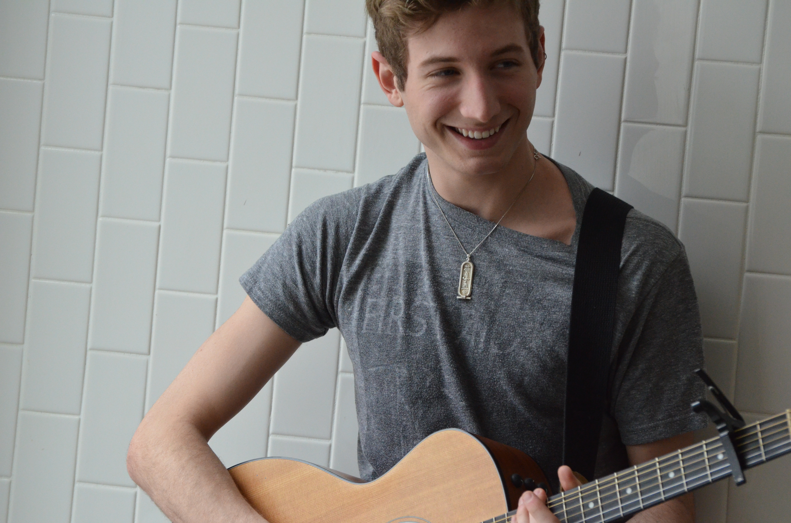

Article and Photos by Vjosa Isai
Uploaded on February 16, 2014
|
Bound by a shared curiosity for music and childlike fascination with one another, Jordan Francescangeli and Julia Wittmann are not your average dishevelled indie musicians. The acoustic guitarists’ musical collaboration was sparked by a “big crush”, or falling in love with the other’s mind.
“We were really fascinated with each other,” Francescangeli says of their first encounter at St. Benedict Catholic Secondary School in Cambridge, ONT. “We developed this creative relationship where we would write songs for each other...It was kind of like this mutual adoration.” Even though they craved each other’s company, the singer-songwriter duo didn’t get to know each other through coffee dates or incessant texting. “We never talked,” Wittmann says with finality. The first year Radio and Television Arts student explains how they would write acoustic pieces to communicate and respond to the other’s material. “It was always done through subtle lyrics.” And they still use this model today, with the slight modification of talking through critiques and bouncing opinions back and forth on melodies, chord progressions, and samples. For now, Francescangeli and Wittmann are two independent artists working in collaboration, but forming a band is a possibility they hope to consider through their growth as musicians. |
|  |
The song “No Angel” on Beyoncé’s latest album was written by indie songwriter Caroline Polachek from Chairlift, a band based in Brooklyn.
“I want her career,” Wittmann says of Polachek. She imagines her career in music eight years from now: “I’m 26. I live in downtown Toronto or L.A., and I work for a songwriting company or a studio. I think I could do a mix, like engineering-slash-writing.” Prior to that, she would also like to continue her academic pursuits with a Masters degree in English. Ultimately, whether or not her plan changes, Wittmann says, “My quest as a human being is to find out what is real.” Francescangeli jumps in, likening Wittmann’s mission to the song Reflektor by Arcade Fire. |

Spotlight Editor in Chief
Vjosa Isai
vjosa.isai@ryerson.ca
Want to get your time under the lights? Are you a writer looking to join the Artist Spotlight initiative? E-mail us at music@ryerson.ca to see how!